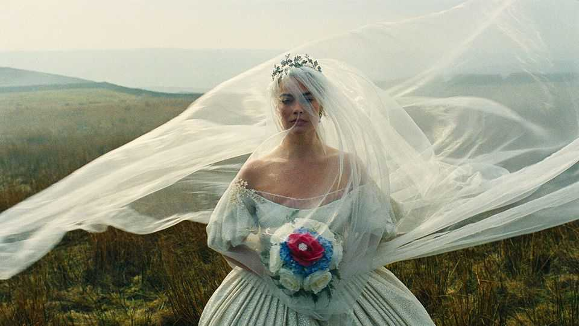
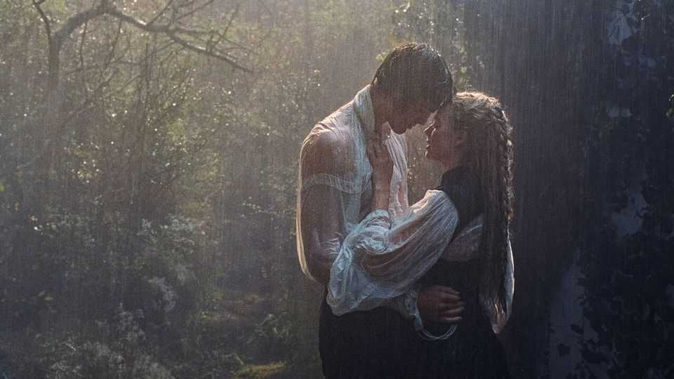

Culture | Gimme moors

WHAT iS THE best way to adapt a novel for the screen? There are two schools of thought. The first—call them the loyalists—insist that film-makers should stick to the source material slavishly. George R.R. Martin, whose “Game of Thrones” series inspired one of the most popular TV shows ever, stated that screenwriters who strive to “make the story their own…never make it better”. Instead, “999 times out of 1,000, they make it worse.”
The second group, the rebels, believe they should not be beholden to the authority of the original text. “If you simply write down scenes from the novel, it never works,” Sir David Hare, a British playwright and screenwriter, has said. “The only way to be faithful to a novel is by being lavishly promiscuous.”
Emerald Fennell seems to have taken Sir David’s advice to heart. The British film-maker has written and directed “Wuthering Heights”—a movie that, despite sharing a name with Emily Brontë’s novel of 1847, resembles it about as closely as the Yorkshire moors in which it is set resemble Los Angeles. It takes such liberties with the plot that it could more reasonably be described as fan fiction than a true adaptation of the Victorian classic.
Ms Fennell, for her part, warned viewers about her intentions in advance. “You can’t adapt a book as dense and complicated and difficult as this,” she declared: “It’s not possible.” She made it clear that this film is her take on the story, based in part on her memory of reading the strange, haunting tale of Cathy’s and Heathcliff’s thwarted romance as a teenager. It was also wish-fulfilment: she added the scenes she had wanted to read.
She keeps the bones of the story: the adoption of Heathcliff into the Earnshaw family; his bond with Cathy; the friendship between Cathy and the wealthy neighbouring Linton family; Heathcliff’s alienation; and Cathy’s marriage to Edgar Linton. Ms Fennell keeps the arteries, too, such as Cathy’s famous declaration of love for Heathcliff: “Whatever our souls are made of, his and mine are the same.”
However, Ms Fennell does away with the novel’s limbs and sinews, including several characters and the whole of the second half. She ends the film—spoiler alert—with Cathy’s death. (And her baby dies with her.) That means that there is none of the intergenerational drama, nor the elaborate and often dull revenge plot that occupies Heathcliff after his beloved’s demise. Cathy’s ghost does not return to stalk him decades later.
These changes free up Ms Fennell to spend a large amount of the 136-minute runtime on her main area of interest: sex. Brontë, though unmarried, was no naïf, says Rebecca Yorke of the Brontë Parsonage Museum. But in the book the “intensity of the love and passion” between Cathy and Heathcliff is “unspoken”.

Not so in Ms Fennell’s telling—here it is not just spoken, but shouted about, loudly and repeatedly. After Cathy (played by Margot Robbie, pictured) witnesses two servants having rough sex using farm equipment, she undergoes an erotic awakening. Later, when Heathcliff returns to Yorkshire after a prolonged absence, it does not take long for the pair to fall into each other’s arms. In Brontë’s book they barely even kiss. In Ms Fennell’s version, they get hot and heavy in the garden, a carriage, her boudoir and elsewhere.
If Ms Fennell wants to make a sexed-up version of “Wuthering Heights”, that is her prerogative. None of it will surprise anyone who has seen her previous films, “Promising Young Woman” and “Saltburn”, both of which touch on the dark side of desire. David Thomson, a film historian, says Ms Fennell’s work has “got a real sense of sensuality, sexuality, danger” and a “kind of recklessness” in its willingness to take risks. Her fans may appreciate her boldness, not to mention the sumptuous costumes and occasional jokes.
Devotees of the novel, however, will be dismayed that Brontë’s tale of class, obsession and violence has been so distorted. Many will believe that she has desecrated the book and hollowed out its characters. Luckily, purists can turn on one of many other, more faithful adaptations.
They should also bear in mind the wry observation of James Cain, an American novelist and journalist whose work was the basis for “Double Indemnity”, among other films. “People tell me, ‘Don’t you care what they’ve done to your books?’ I tell them, ‘They haven’t done anything to my book. It’s right there on the shelf.’” ■
For more on the latest books, films, TV shows, albums and controversies, sign up to Plot Twist, our weekly subscriber-only newsletter